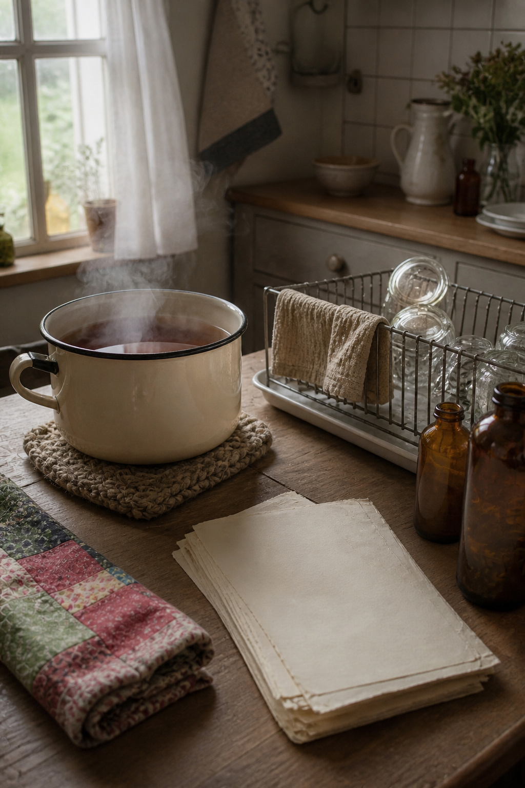
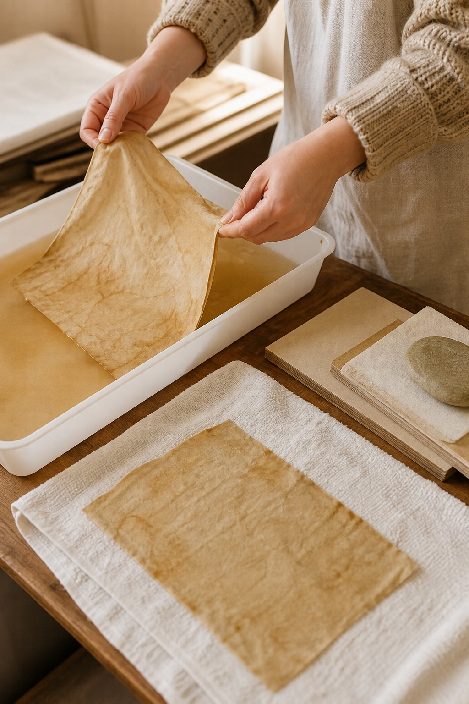

Tea staining can give new paper a quiet, handled warmth, but soaking and hot drying often leave it rippled or fragile. A lighter bath and patient pressing produce paper that still folds, writes, and binds well.

Test the paper first
Cut a small sample from the same paper. Dip it, dry it, and write on it. Coated paper may resist color, while thin copier paper can weaken quickly. The test shows whether to shorten the bath or use a brush instead.
Brew a light controlled stain
Steep black tea, let it cool completely, and pour it into a shallow tray. Start lighter than the final color you imagine; paper often dries darker around the edges. Add more tea only after testing a sheet.
Wet one sheet at a time
Slide the paper into the bath and press it gently beneath the surface. Avoid scrunching unless you want strong wrinkles. Lift it by two corners after a few seconds and let the excess liquid return to the tray.

Blot instead of rubbing
Lay the sheet on a clean cotton towel and place another cloth on top. Press with flat hands. Do not rub, because the wet surface is vulnerable. Replace the cloth when it becomes saturated.
Dry slowly and flat
Transfer the damp paper to a screen, rack, or clean absorbent surface. Turn it once during drying. When it is barely damp, sandwich it between clean sheets and place a board with light weight on top.
Add marks after the base dries
For darker edges, brush a little stronger tea onto dry paper and blot immediately. This gives control without resoaking the entire sheet. Splatter small areas only after protecting your workspace and nearby pages.
Store it before folding
Let the paper rest flat for a full day before scoring or binding. If it smells strongly of tea or feels cool, moisture remains. Store finished sheets in a dry folder and avoid tea-staining irreplaceable documents.
The goal is not uniform antique brown. Pale variation, one darker edge, and the natural paper color left visible will look more believable and remain easier to use.
Image note: Some visuals in this article were created with AI and curated by Sentimentalica.